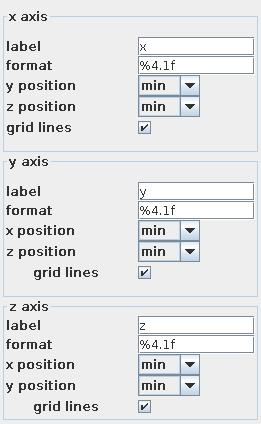
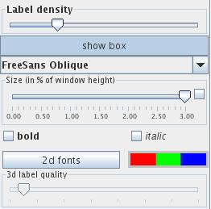
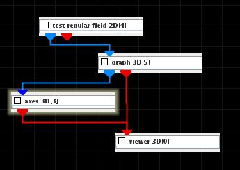

Axes 3D
The module creates labeled coordinate axes and a box in 3D.
Input data
The input field is regular or irregular 3-space.
Output data
The output is a 3D geometry object.

Module GUI
For each axis there are several parameters which the user can change:
The label text field contains axis description.
The format text field contains the format of the tick numbers.
With the help of two drop down lists the user declares the position of the labeled axis in relation to the remaining axes. By default the position is in the minimum of the field extent. The user can choose between minimim, 0, center, maximum.
If grid lines check box is on additional dotted grid lines are drawn. This option is on by default.

The label density slider defines the density of number labels.
If show box button is pressed there is drawn a box containing the geometrical object, besides the axes and the grid lines. By default the button is pressed.
The font drop down list defines the font of the numbers.
The Size slider scales the size of the font in percent of the window height. If check box on the right hand side is on the user can change minimum, maximum and current value.
The bold and italic check boxes define font style as bold and/or italic.
Use 2d fonts/3d fonts button to switch between 2D or 3D number fonts. By default 2D fonts are used. They consume less memory and look cleaner.
In the case of 3d fonts the 3d label quality slider is active and the user can increase the quality of the fonts.
Example

Choose test regular field 2D module from test objects library, graph 3D module from 2D field mappers library and axes 3D module from general mappers and accessories library and connect them.
In the graph 3D module computation tab choose gaussians1 graph component, an appropriate graph scale and switch the set z-coordinate to field range on. In the presentation tab choose gaussians1 as color component. Choose an appropriate label size using the size slider in the axes 3D module UI.